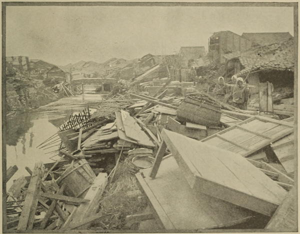

“A ruined village”
Japan (1897)
Very soon after my arrival, occasional vague sensations of a trembling beneath my feet reminded me of the volcanic nature of the land to which I had come; but it was not till the beginning of December that I had my first experience of a regular earthquake—an experience destined to become familiar to any one who pays more than a passing visit to Japan. The time was night, and I was suddenly awoke by the bed shaking, the door mysteriously flying open, and the ewer, water-bottle, etc., sounding in chorus. Whether or not I attempted to jump out of bed I have now forgotten; but, even if I did, the event was over long before I could have reached the outer door. This was my common experience; if ever I began to think the motion was getting so serious that it would be prudent to rush outside, the earthquake was sure to stop. It cannot be said, however, that the sensation was altogether agreeable, especially when it surprised one out of sleep, and was accompanied by such an ‘uncanny’ manifestation as the opening of the door without any visible entrant!
The Land of the Morning (1882)
As we were eating, a sharp shock of an earthquake shook the house, which vibrated for some seconds. No one becomes, I believe, accustomed to these phenomena; the uncertainty which hangs over all the phases of an earthquake-wave darts through the mind of man as well as brutes a ray of terror.
Across America and Asia (1870)
At Kanagawa and Yokohama earthquakes occur very frequently, sometimes, I am told, as often as once a fortnight. Whether these have any connection with the adjacent “Matchless Mountain,” or not, is a point upon which I have heard much disputation, but no decisive conclusion has ever been arrived at.
A Lady’s Visit to Manilla and Japan (1863)
Last night, at the hotel in Yokohama, we woke up quite suddenly about 1 a.m., and were wide awake, when the house began to lurch about, and all the timbers creak like a ship at sea. We jumped up, and I remember having had some difficulty in keeping my feet, and feeling sea-sick. We knew it was an earthquake. I ran to the window; a faint twilight, the grey of the morning, was struggling in—this hotel is on the sea, and a tidal wave might be advancing—and then opened the door of the sitting-room into the passage, where the lamps were swinging about just as at sea. A confused murmur of shuffling feet, and voices, and opening doors, and Japanese laughter, and violent ringing of bells pervaded the place (Japanese always laugh, like the Malays, when they do not quite know what to do); then we went to sleep again, and I awoke thinking that the footsteps of the servant who came to announce that we could have no fire because the chimney had tumbled down, was another earthquake. Indeed, though our bedroom wall was cracked in two places from floor to ceiling, and the paper hanging in wrinkles, we had not suffered as much as other people, whose doors were jammed so tightly by the shock that they could not be opened. All the clocks stopped at the same hour (1 a.m.), and, looking from our window, we see the houses on the hill opposite with chimneys in a dilapidated condition, rather as if a bombardment had taken place. Much damage done, but no life lost;—the severest shock which has been felt since some twenty-five years ago, when 50,000 people perished a few miles from here.
One feels entirely helpless in an earthquake. No use running out into the streets, for the falling tiles would kill you. One lady we heard of climbed up into a tree in her garden and was found there half dead from cold and fright by her husband this morning. What is one to do when, as an American friend says, ‘the houses are waltzing around,’ and one feels ‘just scared out of one’s boots.’ One Japanese house did actually shift three inches without tumbling down: they are built of wood, and have very little foundation.
Journal of a Lady’s Travels Round the World (1883)
The working day of Japan begins very early, and by four or five o’clock the houses are open and the stoves (hibachi) lighted. Breakfast is prepared, and the people make up for their early rising by a noonday siesta. Osaka was therefore fully awake and astir when the terrible earthquake of October 28th began, almost to a second, at 6.30 a.m. Perhaps it will be well to give our personal experiences first, and then add those of the city and neighbouring country as they were gradually brought home to us; for it must be remembered that we were instantly cut off from telegraphic communication with the north, and that news from the country came in but slowly over the shattered roads, so that several days passed before we could in any way estimate the terrible extent of the earthquake.
Let us begin with our personal experiences. Archdeacon Warren’s house, in which my father, Mrs. Bickersteth, and my brother were staying at the time, is two storeys high, and built of stone and wood. The second storey had been added some years after the house was first erected, and, probably because foreign buildings were rather new to the Japanese at the time, it was not very securely put together, and therefore suffered more than many others from the shocks. In Tokyo and the neighbourhood all the houses are warmed by stoves, and a chimney is almost unknown on account of the many small shocks which occur in various months of every year, rendering such a luxury as an open fireplace and chimney most undesirable. But in Osaka, where earthquakes are very uncommon, chimneys were to be seen in all the foreigners’ houses, Archdeacon Warren’s among them, and the Japanese freely used them in their factories. Very few people living at the time could even remember such an event as an earthquake. Only a day or so after our arrival, we had inquired if any shocks had been recently felt in Osaka, and the reply was immediately given, “We never have an earthquake here!” The events of the 28th were therefore as great an astonishment to our friends as to ourselves.
My father and Mrs. Bickersteth were about to get up that morning when the first rumble of the earthquake began. They waited for a moment before doing anything, as after our experience at Tokyo they fully expected each oscillation would be the last. But instead of passing away the shock gained in intensity every second; and my father ran under the doorway, calling to Mrs. Bickersteth to follow him, as he knew that, narrow as it was, it would have afforded some slight shelter had the ceiling fallen in. She was just coming to him when another shock, worse than any before, dashed the door against his hand and foot, bruising them both. But Mrs. Bickersteth managed to cross the room, though it trembled, and shuddered, and swerved, in a way that words are wholly powerless to describe. As she did so the same shock which dashed the door on my father burst open the large windows behind her looking on the road, and with an awful crash threw down the chimney, which was built against the wall of their room, hurling it through the ceiling of the drawing-room, and wrecking that room completely.
She and my father then remained under the doorway until the house was still. The worst shock lasted two and a half minutes, and it was scarcely over when my brother came up to see if they had been injured, saying he had never been so alarmed by any earthquake since he came to Japan. His room was on the ground floor, and he had left it and had run towards the front door, in order to escape into the garden. The chimney fell in as he passed the drawing-room door, and on opening it for a moment he saw that the room was a wreck open to the sky. He ran on into the garden, where Archdeacon Warren had already taken refuge. They felt the earth reeling under them, a strong proof of the violence of the shock, as an earthquake which will vibrate most unpleasantly in a house will not be felt at all in the open air.
The two Miss Warrens, who slept together in a room opposite my father’s, rushed out into the garden directly the earthquake began, but on the opposite side to that where the Archdeacon was standing with my brother. In the strong instinct of self-preservation aroused by an earthquake it is almost impossible to decide on the how, when, or where of an escape. But it was certainly a great mercy that they did not stay in their room, for just after they left it their large wardrobe fell down, pushing their bed before it, and had they been there it would have injured them severely.
Meantime I was in Miss Tristram’s house (the Bishop Poole’s Girls’ School). Some alterations were being made in the dining-room, drawing-room, and the bedrooms above them. Miss Tristram had therefore kindly given up her own bedroom to me, and was sleeping on the other side of the quadrangle. Miss Bolton’s* room was also a long way off, so I was quite alone, and within reach of nobody, either Japanese or English, when the earthquake began. I shall never forget how the intense horror grew upon me as second by second went past, and each one seemed worse than the last. The first sound was like a heavy dray being driven under the windows. I was in bed reading, and the maid had just brought in a cup of tea. Like my father, I was not really alarmed at first, only thinking to myself, “Another earthquake,” expecting it would stop, like those at Tokyo, before I had time to realize it had begun. But I found soon enough this was something entirely different. On it went, every window and wall creaking, swaying, rattling, until in utter terror I rushed from my room, thinking I would go downstairs into the quadrangle. But when I reached the staircase the very steps reeled before me, and I dared not go down into the narrow hall below. A sort of horror lest I should be crushed in it turned me aside to some empty rooms, through one of which I reached a long verandah running round the house. Here, to my great relief, I met one of the missionaries (Miss Bolton), and remained with her until the earthquake was over. The quadrangle was full of the school girls, screaming with terror; but no sound reached us from the outside streets until the earthquake ceased; and then a sort of prolonged wail seemed to go up from the city. We returned to our rooms, and saw many people rushing down the road; and a squadron of soldiers passed who had evidently been sent to keep order. Miss Tristram was on her knees when the earthquake began; she was knocked over, but sustained no injury, and as soon as possible came to see if I was also unhurt. We all dressed as quickly as we could, and long before we had finished Miss Warren kindly came to tell us that nobody at their house was injured, though the house itself was a wreck.
*The assistant teacher of Bishop Poole’s Girls’ School.
We each one felt we had been preserved in imminent danger, for had the earthquake happened the night before, the drawing-room would have been occupied; and if the chimney by my father’s room had fallen to the right instead of to the left, he and Mrs. Bickersteth must inevitably have been crushed. Also, as regards myself, a wardrobe stood just above my bed, and it or the chimney might easily have fallen, as happened in the Warrens’ house at the same moment.
We soon had messages from all the other missionaries to say they were also quite safe, though no less than seven chimneys had fallen in the Concession. The family of Mr. Fyson, the Principal of the Divinity College, could tell of a very remarkable escape. Directly the earthquake began Mrs. Fyson told the nurse to carry the baby into the garden while she followed with her other children. As the nurse crossed the courtyard she fell over one of the stepping-stones, probably through a vibration of the earthquake, and all the others following close behind fell upon her! But by the unwelcome delay they avoided a heavy chimney which crashed down in front of them, and the children escaped with a few bruises. If they had gone on another two yards they would have been crushed.
About 8.30 a.m. I went to the Archdeacon’s house, and found young Mr. Warren already engaged in photographing the drawing-room, and the others waiting for breakfast in a little back room, as it was feared the dining-room chimney might collapse at any moment. The house looked exactly as if it had been bombarded. It was much older and less strongly built than the Girls’ School, and had suffered more severely from the shock. The walls of the staircase were marked with great patches where the plaster had come down, and the fallen furniture, and, above all, the wrecked drawing-room, looked desolate indeed.
But the Archdeacon and his daughters made the very best of everything, truly burying all regret for personal losses in intense thankfulness that no member of the Mission nor any of our party had been injured.
News now began to come in from the city. We heard first that a large bridge over the river near the Archdeacon’s house had been badly damaged. It was a slightly arched wooden one, supported on heavy piles; but the earth had evidently opened in the bed of the river beneath, for instead of being arched it had now partially collapsed in the centre. A straw rope was stretched across each end, and the police only allowed one or two people to go over at a time. Much worse news than the state of this bridge followed, viz.: that a large foreign-built factory had fallen in like a pack of cards, killing thirty of its employés and wounding many others. It was always kept open at night; but the night staff had left and those on duty by day had not all arrived, or the loss of life would have been much more serious. ...
To return to Archdeacon Warren’s house. We were still gathered round the breakfast-table when Mr. Fyson came in to say that he should fully understand if my father did not now feel able to address the Divinity students, as it had been previously planned he should do at 9 a.m. But my father said that if the students were ready he would certainly keep to the plan; and he gave them two addresses, the first in their respective class-rooms, on reading, Euclid, etc., and the second, in a larger room, on “The Divinity of Our Lord.” ...
While my father was at the Divinity School my brother went out to telegraph inquiries to Tokyo as to our friends there. He received no answer from them, and in time we learned that all telegraphic communication between Osaka and the north had been cut off, and the railway by which we had travelled only the previous week had been broken in a dozen places.
Later in the morning we started in jinrikshas with Archdeacon Warren to visit the C.M.S. High School for Boys on the other side of the city, which had been lately built and opened, chiefly through funds provided by the Rev. F. E. Wigram. The road did not take us near the factories, and the only very noticeable mark of the recent earthquake were the litters we passed now and then, in which the wounded or dead were being carried to their homes. The streets of the city seemed very quiet, the people showing wonderful self-control, though the sad and utterly hopeless look on some of their faces made one realize what it must be to have sorrow and death so close, and yet no comfort from religion to help in this world or the next.
When we arrived at the High School, a large building on the outskirts of Osaka, we found our hosts, Mr. and Mrs. Price (the Principal and his wife), and their guests thinking and talking of little else but the events of the morning. They had rushed out of doors, but neither they nor any of the boys had sustained any injury. After luncheon we went all over the school house, and heard the boys, about fifty in number, translate into English, and work out a problem in Euclid. We also visited their dining-room and dormitories, and on returning to the large schoolroom, my father made a speech to the assembled school, to which one of the boys returned a very grateful answer in English.
Japan As We Saw It (Bickersteth) (1893)
◀ InsectsEdo/Tokyo ▶